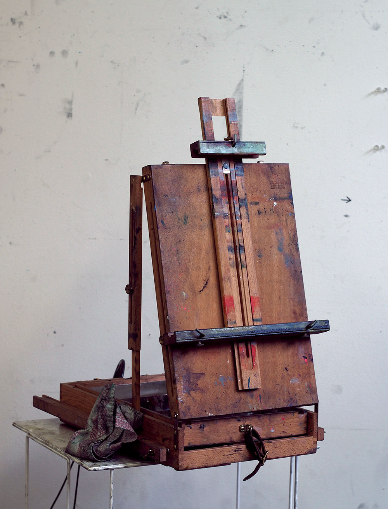

Painting, Drawing and Thinking
Affordable courses in the practical skills and concepts of contemporary visual art.
Learn how to make interesting work that is an honest expression of your ideas and experience.
Classes are held in central Portland, OR.
Remote lessons can be individually arranged.
Beginners: June - Sept 2017
This class is a way to learn the tenets of studio work along with practical skills that will give you the tools and clear the path if you want to continue your inquiry as an artist.
Once a week, $60 / month for three months, flexible supply costs. Suitable for adults or teenagers.
Learn more
Looking and technical skills
Most of painting is looking, but that doesn’t feel like you’re doing the work you think you should be doing, and the hand gets in the way of the eye. So for beginners, we will separately train the eye and the hand before trying to integrate them. Half of the work will be out of the studio, visiting parks, galleries, museums, and talking about other mediums including music, dance, writing, and your personal lives. The other half will be material-focused. We will explore and work with materials with the goal of clearing the way for you to begin satisfying your own curiosity and interest in particular materials. For example, we will seek to answer questions you’ve always had about the use or behavior of certain materials, or to find materials and methods that feel right to you if you haven’t done that yet. In both contexts, you will be challenged to explore beyond your comfort zones, which is one of the main reasons to ever take a class instead of simply practicing by yourself.
The goal of this unit is to develop your ability to use art materials to facilitate critical, insightful looking. This is an ongoing process that you will follow cyclically for as long as you make art, so there is no point of graduation from this stage. We will evaluate your progress at the end of this unit by discussing your awareness of the process, and by your ability to talk about how your chosen materials intersect with your attempts to look closely at things and ideas. At the end of the unit you should have a foothold in the process of using art materials to develop a visual language.
There are many options for further study, and students’ interests and ideas will be part of deciding what to do in the next unit, should they choose to continue.
Transitioners: June - Sept 2017
This class is assumes that you already work on something that requires you to solve problems and create new ideas. We will look at the way that this works in painting and contemporary visual art, either as a way to enrich your main practice or as a viable start to becoming a Serious Painter ®.
Once a week with online support. $70 / month.
Learn more
This class is for students who have a developed practice in some non-painting field, art or otherwise, that serves them as a way of asking and answering questions about ideas and selves. Students should have a sense of their own interests and abilities that they want to bring to painting, and a desire to explore how the materials and methods of painting can expand or develop them. This class is more suitable for online students than the Beginner’s class.
The course is designed so that students’ discussions of their interests, influences, and questions can overlap and inform each other. My role will be to facilitate these discussions and provide painting-specific research and material to connect these discussions to visual art. Specific technical instruction will be dependent on each students’ individual interests and projects. 75% of the class will be in a group setting, and the rest will be one-on-one to facilitate specific, personal development.
The outcome of the first unit of this class will be a coherent statement of purpose for a visual art project, written or otherwise. Given sufficient student interest, subsequent units of this course could be developed with the goal of creating a group exhibition.
About this school
I think the particular ways in which painting is difficult make it a useful practice. It is self-directed work that deals with change in a way that exposes the tension between direct experience and your expectations. If you want to progress, you have to continously sharpen your ability to observe yourself and the outside world and your relationship to it.
Doing so is a way to practice a conceptual framework that you can apply to other problems that can’t be solved with brute force, rote skill, or cheating.
This sort of practice is often at odds with the way we expect school work and study to be. I would like to thank my Sifu, Jamie Tan, for showing me how a simple and open way of teaching can cultivate this kind of thinking.
Your instructor
I graduated in 2008 from Glasgow School of Art with a degree in painting, and have been working as an artist, writer, community organizer, and web developer in Portland, Oregon since then. Here are some samples of my work.


Classes will take place at my studio in Portland’s southeast industrial district.